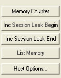
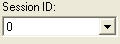
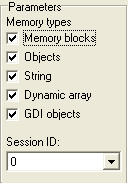

To start LeakInspector, run {Denomo path}\bin\LeakInspector.exe
This document consists of following parts:
Function list:
1, Memory Counter
Parameters used: All.Reports all memory blocks count.
2, Inc Session Leak Begin
Parameters used: All except Session ID.Start a new leak detection session by increasing current Session ID for one.
3, Inc Session Leak End
Parameters used: All except Session ID.End a new leak detection session by decreasing current Session ID for one.
4, List Memory
Parameters used: All.List all memory blocks with address and size information, maybe stack track included.
5, Hook Options
Parameters used: None.Set the options.
Understand session:
The term "session" here is used to define a period in which you perform a serial actions on your program to expect some new memory is allocated and they should also be freed during the certain period.
To be simple, the program's state should be restored exactly same as the point that the session begins when the session ends.
For example, assume you are making a multi-documents editor.
Now run the program (editor), keep it blank without any document opened.
1, Correct session example,
Start a session while no document is opened, then load an existing document from the disk, then close the document immediately. Now end the session.This is a correct session. You start the session while no document is opened, and after the session ends, still no document is opened. So you can expect no any document-related object/memory is left after the session.
2, Incorrect session example,
Still start a session while no document is opened, then create a new empty document, then load an existing document from the disk, then close the document you just load. Now end the session. It's a totally wrong session because before the session, there is no document opened but after the session, there is an empty document, so the state changed during the session and isn't restored. In such a kind of session, memory "leak" is reasonable. At least an empty document object will be "leaked".Make session clean:
If you start a session immediately after the program runs, maybe some delay created objects will be wrongly marked as leak. To avoid it, you should better perform the same actions for at least one or two times to ensure the delay created objects are created before the session really starts.Understand parameters:
Parameters are passed to Denomo core code to define the memory scope to detect.
1, Memory Types:
Denomo tries to mark a memory block with different type if possible. For example, it will mark a memory block as "Object" if it's allocated from an object's constructor.Now there are four memory types:
A: Memory block: this is the raw type of a memory block, usually it's allocated directly from GetMem. Such memory block is not used for object instance.
B: Object: this is object type, each memory block is an object instance's body. Usually it's allocated from an object's constructor.
C: String: each memory block is a ANSI string.
D: Dynamic array: each memor block is a dynamic array.
E: GDI objects: the GDI object handles.
Only the selected types of memory blocks will be counted or reported.
2, Session ID:
Beside memory type, Denomo gives each memory block a session ID. This ID is used to distinguish different blocks allocated during different session. Memory blocks with same session ID are in the same group.One memory block will be counted or reported only if its session is same as the selected Session ID. However, if the selected Session ID is 0, all blocks with any session id will be reported.
Understand output information:
Denomo will output information in plain text.For functions "Inc Session Leak End" and "List Memory", the output is the memory block information in a certain format.
One kind of such output looks like below,
01308628 BlockSize: 32 Class: TLeakObject
ST: 0049EDD5 [LeakGen] [TLeakStrategyItemObject.DoExecuteOnce] [632]
ST: 0049EB51 [LeakGen] [TLeakStrategyItem.Execute] [541]
ST: 0049F4EB [LeakGen] [TLeakStrategy.Execute] [823]
ST: 0049E840 [LeakGen] [TLeakGenerator.PerformLeak] [465]
ST: 004A00DA [LeakGenFrame] [TFrameLeakGen.ExecuteLeak] [86]
ST: 004A00A0 [LeakGenFrame] [TFrameLeakGen.ActionLeakExecute] [80]
ST: 00425A7C [Classes] [TBasicAction.Execute] [10465]
ST: 00483AC0 [ActnList] [TContainedAction.Execute] [375]
ST: 00484D2C [ActnList] [TCustomAction.Execute] [961]
ST: 0042587A [Classes] [TBasicActionLink.Execute] [10394]
In the first line, the first number 01308628 is the address of the memory block being reported. It's a hex number.BlockSize: The size of the memory block allocated. It's a decimal number. 32 means 32 bytes.
Class: The class name if the memory block is an object. If the memory block is not an object but a raw memory, this field will be GETMEM, indicating it's allocated by system GetMem method.
All the following lines start with a prefix "ST:" are the stack trace.
The first number is the calling address. It's a hex number.
There are three extra fields closed in braces. These are the source information of the stack trace.
The first field is the unit name.
The second field is the method name. If the method is an object method, the class name will be prefixed ahead.
The third field is a decimal number indicates the line number in the source code.
NOTE: the three ultra useful fields may not be outputted if you forget enable TD32 information in your project.
The deep of the stack trace may vary. It depends on the value of "StackTraceDepth" in DenomoMemHooker.pass, and also depends on the real callers.
The calling order is from bottom to top (the top one is the most recent caller), so the calling chain of above output is,
TBasicActionLink.Execute calls TCustomAction.Execute, TCustomAction.Execute calls TContainedAction.Execute. TLeakStrategyItemObject.DoExecuteOnce is the last called method in the calling chain.